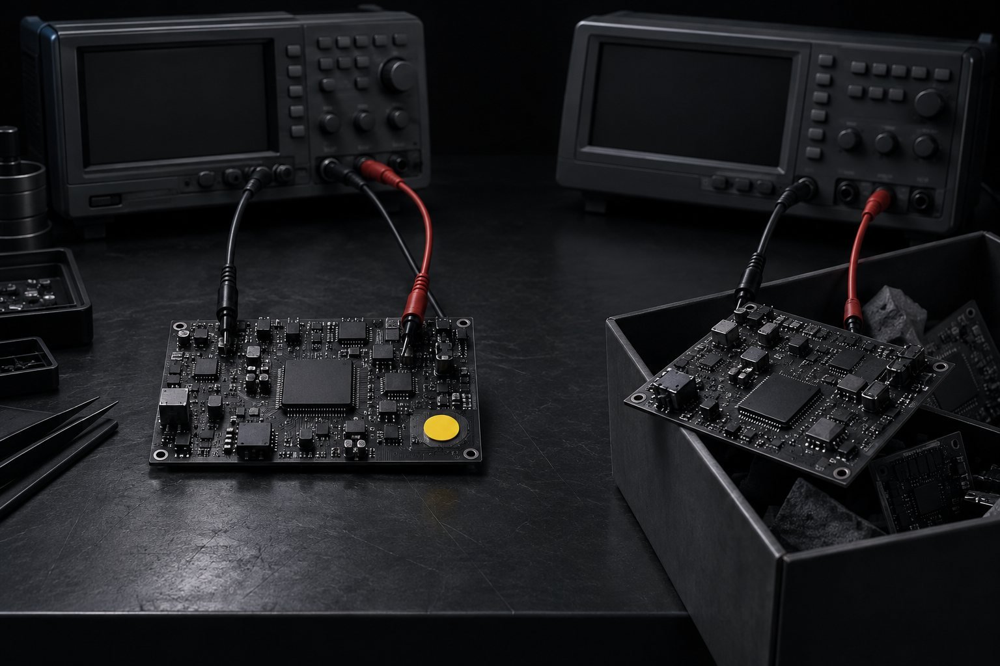
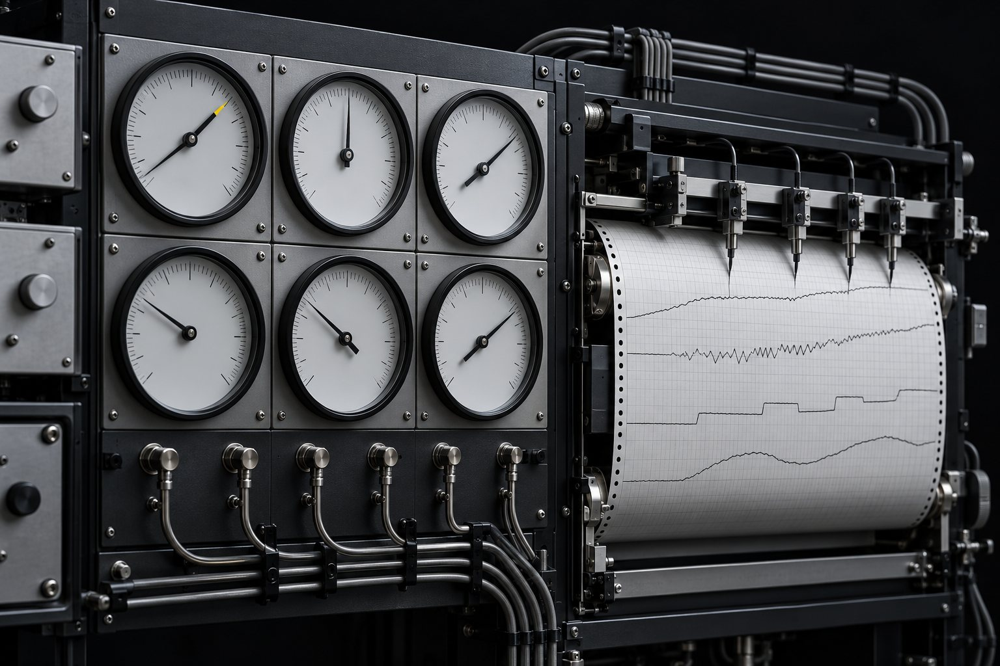
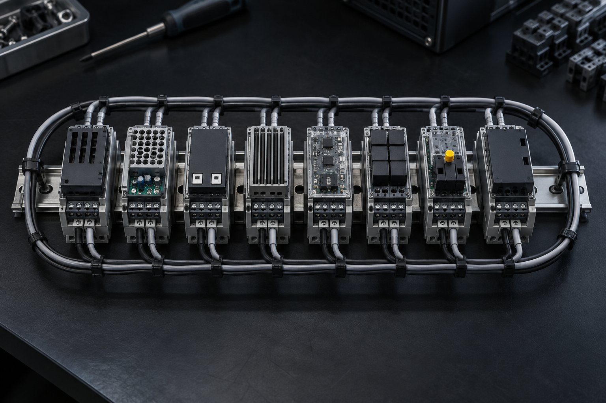

LOOP-R Engineering Track · course 5 of 6, the last one · 8 lessons
The loop that learns: improve with a number, promote with approval, and roll back without losing anything
A hypothesis with a number, an experiment that keeps or discards by a single metric, a decision card, promotion and rollback, lessons that become binding rules, the risk of optimizing against your own meter, and the cost of each cycle. All with small scripts you run first without spending quota.
- 8lessons
- 24exercises with expected output
- 13scripts in the kit; the rehearsals don't call a model
- 2real steps with a model, one call each
The 6 courses in the track
This is course 5, the last one. Lesson 8 brings together the pieces from all six. Suggested order: 0 → 1 → 2 → 3 → 4 → 5.
 Course 0Foundation: anatomy of the loopThe five pieces, the harness, the loop engines, LOOP-R, done criterion from 0 to 4, and ceilings.Open the course
Course 0Foundation: anatomy of the loopThe five pieces, the harness, the loop engines, LOOP-R, done criterion from 0 to 4, and ceilings.Open the course  Course 1Verification and evalsSeparate, skeptical evaluator, frozen tests, reward hacking, golden set, and calibrated judge.Open the course
Course 1Verification and evalsSeparate, skeptical evaluator, frozen tests, reward hacking, golden set, and calibrated judge.Open the course  Course 2Long-running executionThe seven-file kit, goal.md level 3+, context in bands, handoff, headless loop, and measurement.Open the course
Course 2Long-running executionThe seven-file kit, goal.md level 3+, context in bands, handoff, headless loop, and measurement.Open the course  Course 3Multi-agent and orchestrationWhen not to use it, subagents, generator × evaluator, worktrees, queues, and the Claude + Codex team.Open the course
Course 3Multi-agent and orchestrationWhen not to use it, subagents, generator × evaluator, worktrees, queues, and the Claude + Codex team.Open the course  Course 4Security of the autonomous loopLethal trifecta, Rule of Two, injection through read content, guard hooks, and sandbox.Open the course
Course 4Security of the autonomous loopLethal trifecta, Rule of Two, injection through read content, guard hooks, and sandbox.Open the course - Course 5 · you are hereThe loop that learnsA hypothesis with a number, an experiment, promotion and rollback, lessons that become rules, and the risk of optimizing against the meter.Open the course
The lessons
In the order the loop learns: write the hypothesis, test it, decide and promote, save the lesson, make it binding, protect the meter, measure the cost, and put it all together in your own system.
 Lesson 1 · 15 minA hypothesis with a numberA loop that learns starts with a sentence that can turn out wrong. "Improve the triage" is never wrong, so it teaches nothing. In this lesson you write the hypothesis with process, metric, current, target, measurement command, and what must not get worse, and you work out how long the test takes before you run it.
Lesson 1 · 15 minA hypothesis with a numberA loop that learns starts with a sentence that can turn out wrong. "Improve the triage" is never wrong, so it teaches nothing. In this lesson you write the hypothesis with process, metric, current, target, measurement command, and what must not get worse, and you work out how long the test takes before you run it.
Lesson 2 · 20 minExperiment: keep or discard based on a single metricThe cleanest design for a loop that improves on its own is short: the agent changes one thing, a command gives the score, if it improved it stays with a commit, if it didn't it goes back with git reset, and everything becomes one line in a file. In this lesson you run this cycle with fake agents and then with the real Claude Code.- Lesson 3 · 20 minDecision card, promotion and rollbackA keep in the lab is not the official version yet. In production, the new version only goes up when the verdict says B won without making anything worse, someone approves it from the five-line card, and there is a way back that deletes nothing. In this lesson you redo the published verdicts from the LOOP-R example, promote, and roll back.
- Lesson 4 · 20 minLessons and rules: batch approval and review of an expired ruleThe other side of the loop that learns is not a number: it is the lesson the agent draws from a mistake. Written straight into CLAUDE.md, it only grows, and nobody decides on it or reviews it. In this lesson you use SIL Loop R: occurrence, proposal, batch approval with an explicit decision, and automatic review when the rule's file changes.
- Lesson 5 · 18 minPromotion to AGENTS.md and binding ruleAn approved rule that lives only in a database does not reach a new session: it only exists if someone remembers to look it up. In this lesson you ask the promotion question, record the protection rung and the known leak, write the block into AGENTS.md with a diff first, and watch check flag it when someone edits the block by hand.
- Lesson 6 · 18 minThe risk of optimizing against your own meterA loop that improves itself will find the shortest path to a higher score, and the shortest path isn't always improving the system: it can be memorizing the cases or tampering with the meter. In this lesson you watch both shortcuts become a keep, close them with a meter frozen outside the repo and hidden cases, and watch a real Claude change get discarded.

Lesson 7 · 18 minObservability: traces and cost per cycleA loop that runs on its own must leave a trace: how long each cycle took, how many tokens it spent, what it decided and why. Without it, an error loop or a cycle that blows your quota only shows up at month's end. In this lesson you record one line per cycle and use it to get cost per cycle, cost per keep, and the alerts.
Lesson 8 · 20 minAssemble LOOP-R in your systemThe seven lessons gave you the pieces: hypothesis, experiment, promotion, lessons, binding rule, protected meter, and trace. What's left is putting them together in your system and checking that none was left out. This lesson also closes the track: what each of the six courses puts into the loop, and the dated plan to assemble yours.
Who it's for
- 1You already use Claude Code or Codex in the terminal and want the agent to get better over time, without promoting noise.
- 2You have a process with a number (triage, proposal, support, build) and want to test changes with a clear rule for keeping or discarding them.
- 3You collect lessons in a CLAUDE.md that only grows, and you want a decision, a review, and a binding rule.
What you'll be able to do
- 1Write a hypothesis with a number and know, before you run it, how many weeks the test takes.
- 2Run keep/discard experiments with git and decide by verdict, with guardrails, a card, and human approval.
- 3Promote and roll back versions without deleting anything, and turn a lesson into a binding rule in AGENTS.md.
- 4Catch the agent that improves the score without improving the system, and measure the cost of each cycle.
Before you start
- 1Linux or macOS with git and Python 3. The rehearsals don't call any model.
- 2The public repositories loop-r and sil-loop-r cloned into ~/projetos (the kit reads both and never writes to them).
- 3Recommended: courses 0 to 4 of the track. This course points you to them when the topic belongs to them.